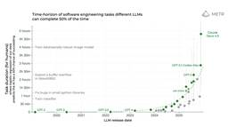
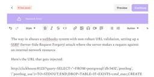

Simon Willison's Weblog
フィード

Quoting Jaana Dogan
Simon Willison's Weblog
<blockquote cite="https://twitter.com/rakyll/status/2007239758158975130"><p>I'm not joking and this isn't funny. We have been trying to build distributed agent orchestrators at Google since last year. There are various options, not everyone is aligned... I gave Claude Code a description of the problem, it generated what we built last year in an hour.</p><p>It's not perfect and I'm iterating on it but this is where we are right now. If you are skeptical of coding agents, try it on a domain you are already an expert of. Build something complex from scratch where you can be the judge of the artifacts.</p><p>[<a href="https://twitter.com/rakyll/status/2007255015069778303">...</a>] It wasn't a very detailed prompt and it contained no real details given I cannot share anything propriety. I was building a toy version on top of some of the existing ideas to evaluate Claude Code. It was a three paragraph description.</p></blockquote><p class="cite">— <a href="https://twitter.com/rakyll/s
6時間前
Was Daft Punk Having a Laugh When They Chose the Tempo of Harder, Better, Faster, Stronger?
Simon Willison's Weblog
<p><strong><a href="https://www.madebywindmill.com/tempi/blog/hbfs-bpm/">Was Daft Punk Having a Laugh When They Chose the Tempo of Harder, Better, Faster, Stronger?</a></strong></p>Depending on how you measure it, the tempo of Harder, Better, Faster, Stronger appears to be 123.45 beats per minute.</p><p>This is one of those things that's so cool I'm just going to accept it as true.</p><p>(I only today learned from <a href="https://news.ycombinator.com/item?id=46469577#46470831">the Hacker News comments</a> that Veridis Quo is "Very Disco", and if you flip the order of those words you get Discovery, the name of the album.) <p><small></small>Via <a href="https://kottke.org/26/01/0048114-investigating-a-possible-">Kottke</a></small></p> <p>Tags: <a href="https://simonwillison.net/tags/music">music</a></p>
1日前
Quoting Will Larson
Simon Willison's Weblog
<blockquote cite="https://lethain.com/company-ai-adoption/"><p>My experience is that <em>real</em> AI adoption on <em>real</em> problems is a complex blend of: domain context on the problem, domain experience with AI tooling, and old-fashioned IT issues. I’m deeply skeptical of any initiative for internal AI adoption that doesn’t anchor on all three of those. This is an advantage of earlier stage companies, because you can often find aspects of all three of those in a single person, or at least across two people. In larger companies, you need three different <em>organizations</em> doing this work together, this is just objectively hard</p></blockquote><p class="cite">— <a href="https://lethain.com/company-ai-adoption/">Will Larson</a>, Facilitating AI adoption at Imprint</p> <p>Tags: <a href="https://simonwillison.net/tags/leadership">leadership</a>, <a href="https://simonwillison.net/tags/llms">llms</a>, <a href="https://simonwillison.net/tags/ai">ai</a>, <a href="https://simon
2日前
The most popular blogs of Hacker News in 2025
Simon Willison's Weblog
<p><strong><a href="https://refactoringenglish.com/blog/2025-hn-top-5/">The most popular blogs of Hacker News in 2025</a></strong></p>Michael Lynch maintains <a href="https://refactoringenglish.com/tools/hn-popularity/">HN Popularity Contest</a>, a site that tracks personal blogs on Hacker News and scores them based on how well they perform on that platform.</p><p>The engine behind the project is the <a href="https://github.com/mtlynch/hn-popularity-contest-data/blob/master/data/domains-meta.csv">domain-meta.csv</a> CSV on GiHub, a hand-curated list of known personal blogs with author and bio and tag metadata, which Michael uses to separate out personal blog posts from other types of content.</p><p>I came top of the rankings in 2023, 2024 and 2025 but I'm listed <a href="https://refactoringenglish.com/tools/hn-popularity/">in third place</a> for all time behind Paul Graham and Brian Krebs.</p><p>I dug around in the browser inspector and was delighted to find that the data powering the
2日前
December 2025 sponsors-only newsletter
Simon Willison's Weblog
<p>I sent the December edition of my <a href="https://github.com/sponsors/simonw/">sponsors-only monthly newsletter</a>. If you are a sponsor (or if you start a sponsorship now) you can <a href="https://github.com/simonw-private/monthly/blob/main/2025-12-december.md">access a copy here</a>. In the newsletter this month:</p><ul><li>An in-depth review of LLMs in 2025</li><li>My coding agent projects in December</li><li>New models for December 2025</li><li>Skills are an open standard now</li><li>Claude's "Soul Document"</li><li>Tools I'm using at the moment</li></ul><p>Here's <a href="https://gist.github.com/simonw/fc34b780a9ae19b6be5d732078a572c8">a copy of the November newsletter</a> as a preview of what you'll get. Pay $10/month to stay a month ahead of the free copy!</p> <p>Tags: <a href="https://simonwillison.net/tags/newsletter">newsletter</a></p>
2日前
Quoting Ben Werdmuller
Simon Willison's Weblog
<blockquote cite="https://werd.io/2025-the-year-in-llms/"><p>[Claude Code] has the potential to transform all of tech. I also think we’re going to see a real split in the tech industry (and everywhere code is written) between people who are <em>outcome-driven</em> and are excited to get to the part where they can test their work with users faster, and people who are <em>process-driven</em> and get their meaning from the engineering itself and are upset about having that taken away.</p></blockquote><p class="cite">— <a href="https://werd.io/2025-the-year-in-llms/">Ben Werdmuller</a></p> <p>Tags: <a href="https://simonwillison.net/tags/coding-agents">coding-agents</a>, <a href="https://simonwillison.net/tags/ai-assisted-programming">ai-assisted-programming</a>, <a href="https://simonwillison.net/tags/claude-code">claude-code</a>, <a href="https://simonwillison.net/tags/generative-ai">generative-ai</a>, <a href="https://simonwillison.net/tags/ai">ai</a>, <a href="https://simonwilli
2日前
Introducing gisthost.github.io
Simon Willison's Weblog
<p>I am a huge fan of <a href="https://gistpreview.github.io/">gistpreview.github.io</a>, the site by Leon Huang that lets you append <code>?GIST_id</code> to see a browser-rendered version of an HTML page that you have saved to a Gist. The last commit was ten years ago and I needed a couple of small changes so I've forked it and deployed an updated version at <a href="https://gisthost.github.io/">gisthost.github.io</a>.</p><h4 id="some-background-on-gistpreview">Some background on gistpreview</h4><p>The genius thing about <code>gistpreview.github.io</code> is that it's a core piece of GitHub infrastructure, hosted and cost-covered entirely by GitHub, that wasn't built with any involvement from GitHub at all.</p><p>To understand how it works we need to first talk about Gists.</p><p>Any file hosted in a <a href="https://gist.github.com/">GitHub Gist</a> can be accessed via a direct URL that looks like this:</p><p><code>https://gist.githubusercontent.com/simonw/d168778e8e62f65886000f3f3
2日前

2025: The year in LLMs
Simon Willison's Weblog
<p>This is the third in my annual series reviewing everything that happened in the LLM space over the past 12 months. For previous years see <a href="https://simonwillison.net/2023/Dec/31/ai-in-2023/">Stuff we figured out about AI in 2023</a> and <a href="https://simonwillison.net/2024/Dec/31/llms-in-2024/">Things we learned about LLMs in 2024</a>.</p><p>It’s been a year filled with a <em>lot</em> of different trends.</p><ul> <li><a href="https://simonwillison.net/2025/Dec/31/the-year-in-llms/#the-year-of-reasoning-">The year of "reasoning"</a></li> <li><a href="https://simonwillison.net/2025/Dec/31/the-year-in-llms/#the-year-of-agents">The year of agents</a></li> <li><a href="https://simonwillison.net/2025/Dec/31/the-year-in-llms/#the-year-of-coding-agents-and-claude-code">The year of coding agents and Claude Code</a></li> <li><a href="https://simonwillison.net/2025/Dec/31/the-year-in-llms/#the-year-of-llms-on-the-command-line">The year of LLMs on the command-line</a></li> <li><a hre
3日前
Codex cloud is now called Codex web
Simon Willison's Weblog
<p><strong><a href="https://developers.openai.com/codex/cloud/">Codex cloud is now called Codex web</a></strong></p>It looks like OpenAI's <strong>Codex cloud</strong> (the cloud version of their Codex coding agent) was quietly rebranded to <strong>Codex web</strong> at some point in the last few days.</p><p>Here's a screenshot of the Internet Archive copy from <a href="https://web.archive.org/web/20251218043013/https://developers.openai.com/codex/cloud/">18th December</a> (the <a href="https://web.archive.org/web/20251228124455/https://developers.openai.com/codex/cloud/">capture on the 28th</a> maintains that Codex cloud title but did not fully load CSS for me):</p><p><img alt="Screenshot of the Codex cloud documentation page" src="https://static.simonwillison.net/static/2025/codex-cloud.jpg" /></p><p>And here's that same page today with the updated product name:</p><p><img alt="Same documentation page only now it says Codex web" src="https://static.simonwillison.net/static/2025/code
4日前
Quoting Armin Ronacher
Simon Willison's Weblog
<blockquote cite="https://lobste.rs/c/xccjtq"><p>[...] The puzzle is still there. What’s gone is the labor. I never enjoyed hitting keys, writing minimal repro cases with little insight, digging through debug logs, or trying to decipher some obscure AWS IAM permission error. That work wasn’t the puzzle for me. It was just friction, laborious and frustrating. The thinking remains; the hitting of the keys and the frustrating is what’s been removed.</p></blockquote><p class="cite">— <a href="https://lobste.rs/c/xccjtq">Armin Ronacher</a></p> <p>Tags: <a href="https://simonwillison.net/tags/ai-assisted-programming">ai-assisted-programming</a>, <a href="https://simonwillison.net/tags/generative-ai">generative-ai</a>, <a href="https://simonwillison.net/tags/armin-ronacher">armin-ronacher</a>, <a href="https://simonwillison.net/tags/ai">ai</a>, <a href="https://simonwillison.net/tags/llms">llms</a></p>
4日前
TIL: Downloading archived Git repositories from archive.softwareheritage.org
Simon Willison's Weblog
<p><strong><a href="https://til.simonwillison.net/github/software-archive-recovery">TIL: Downloading archived Git repositories from archive.softwareheritage.org</a></strong></p>Back in February I <a href="https://simonwillison.net/2025/Feb/7/sqlite-s3vfs/">blogged about</a> a neat Python library called <code>sqlite-s3vfs</code> for accessing SQLite databases hosted in an S3 bucket, released as MIT licensed open source by the UK government's Department for Business and Trade.</p><p>I went looking for it today and found that the <a href="https://github.com/uktrade/sqlite-s3vfs">github.com/uktrade/sqlite-s3vfs</a> repository is now a 404.</p><p>Since this is taxpayer-funded open source software I saw it as my moral duty to try and restore access! It turns out <a href="https://archive.softwareheritage.org/browse/origin/directory/?origin_url=https://github.com/uktrade/sqlite-s3vfs">a full copy</a> had been captured by <a href="https://archive.softwareheritage.org/">the Software Heritage ar
4日前
Quoting Liz Fong-Jones
Simon Willison's Weblog
<blockquote cite="https://bsky.app/profile/lizthegrey.com/post/3mb65fnjiis25"><p>In essence a language model changes you from a programmer who writes lines of code, to a programmer that manages the context the model has access to, prunes irrelevant things, adds useful material to context, and writes detailed specifications. If that doesn't sound fun to you, you won't enjoy it.</p><p>Think about it as if it is a junior developer that has read every textbook in the world but has 0 practical experience with your specific codebase, and is prone to forgetting anything but the most recent hour of things you've told it. What do you want to tell that intern to help them progress?</p><p>Eg you might put sticky notes on their desk to remind them of where your style guide lives, what the API documentation is for the APIs you use, some checklists of what is done and what is left to do, etc.</p><p>But the intern gets confused easily if it keeps accumulating sticky notes and there are now 100 stick
5日前
shot-scraper 1.9
Simon Willison's Weblog
<p><strong><a href="https://github.com/simonw/shot-scraper/releases/tag/1.9">shot-scraper 1.9</a></strong></p>New release of my <a href="https://shot-scraper.datasette.io/">shot-scraper</a> CLI tool for taking screenshots and scraping websites with JavaScript from the terminal.</p><blockquote><ul><li>The <code>shot-scraper har</code> command has a new <code>-x/--extract</code> option which extracts all of the resources loaded by the page out to a set of files. This location can be controlled by the <code>-o dir/</code> option. <a href="https://github.com/simonw/shot-scraper/issues/184">#184</a></li><li>Fixed the <code>shot-scraper accessibility</code> command for compatibility with the latest Playwright. <a href="https://github.com/simonw/shot-scraper/issues/185">#185</a></li></ul></blockquote><p>The new <code>shot-scraper har -x https://simonwillison.net/</code> command is really neat. The inspiration was <a href="https://simonwillison.net/2025/Dec/26/slop-acts-of-kindness/#digital-f
5日前
Quoting D. Richard Hipp
Simon Willison's Weblog
<blockquote cite="https://sigmodrecord.org/publications/sigmodRecord/1906/pdfs/06_Profiles_Hipp.pdf"><p>But once we got that and got this aviation grade testing in place, the number of bugs just dropped to a trickle. Now we still do have bugs but the aviation grade testing allows us to move fast, which is important because in this business you either move fast or you're disrupted. So, we're able to make major changes to the structure of the code that we deliver and be confident that we're not breaking things because we had these intense tests. Probably half the time we spend is actually writing new tests, we're constantly writing new tests. And over the 17-year history, we have amassed a huge suite of tests which we run constantly.</p><p>Other database engines don't do this; don't have thislevel of testing. But they're still high quality, I mean, Inoticed in particular, PostgreSQL is a very high-quality database engine, they don't have many bugs. I went to the PostgreSQL and ask them
5日前
Quoting Jason Gorman
Simon Willison's Weblog
<blockquote cite="https://codemanship.wordpress.com/2025/11/25/the-future-of-software-development-is-software-developers/"><p>The hard part of computer programming isn't expressing what we want the machine to do in code. The hard part is turning human thinking -- with all its wooliness and ambiguity and contradictions -- into <em>computational thinking</em> that is logically precise and unambiguous, and that can then be expressed formally in the syntax of a programming language.</p><p>That was the hard part when programmers were punching holes in cards. It was the hard part when they were typing COBOL code. It was the hard part when they were bringing Visual Basic GUIs to life (presumably to track the killer's IP address). And it's the hard part when they're prompting language models to predict plausible-looking Python.</p><p>The hard part has always been – and likely will continue to be for many years to come – knowing <em>exactly</em> what to ask for.</p></blockquote><p class="cite"
6日前
Copyright Release for Contributions To SQLite
Simon Willison's Weblog
<p><strong><a href="https://www.sqlite.org/copyright-release.html">Copyright Release for Contributions To SQLite</a></strong></p>D. Richard Hipp <a href="https://news.ycombinator.com/item?id=46420453#46424225">called me out</a> for spreading misinformation on Hacker News that SQLite refuses outside contributions:</p><blockquote><p>No, Simon, we don't "refuse". We are just very selective and there is a lot of paperwork involved to confirm the contribution is in the public domain and does not contaminate the SQLite core with licensed code.</p></blockquote><p>I deeply regret this error! I'm linking to the copyright release document here - it looks like SQLite's public domain nature makes this kind of clause extremely important:</p><blockquote><p>[...] To the best of my knowledge and belief, the changes and enhancements that I have contributed to SQLite are either originally written by me or are derived from prior works which I have verified are also in the public domain and are not subje
6日前
Quoting Aaron Levie
Simon Willison's Weblog
<blockquote cite="https://twitter.com/levie/status/2004654686629163154"><p>Jevons paradox is coming to knowledge work. By making it far cheaper to take on any type of task that we can possibly imagine, we’re ultimately going to be doing far more. The vast majority of AI tokens in the future will be used on things we don't even do today as workers: they will be used on the software projects that wouldn't have been started, the contracts that wouldn't have been reviewed, the medical research that wouldn't have been discovered, and the marketing campaign that wouldn't have been launched otherwise.</p></blockquote><p class="cite">— <a href="https://twitter.com/levie/status/2004654686629163154">Aaron Levie</a>, Jevons Paradox for Knowledge Work</p> <p>Tags: <a href="https://simonwillison.net/tags/ai-ethics">ai-ethics</a>, <a href="https://simonwillison.net/tags/careers">careers</a>, <a href="https://simonwillison.net/tags/ai">ai</a>, <a href="https://simonwillison.net/tags/llms">llms
6日前
simonw/actions-latest
Simon Willison's Weblog
<p><strong><a href="https://github.com/simonw/actions-latest">simonw/actions-latest</a></strong></p>Today in extremely niche projects, I got fed up of Claude Code creating GitHub Actions workflows for me that used stale actions: <code>actions/setup-python@v4</code> when the latest is <code>actions/setup-python@v6</code> for example.</p><p>I couldn't find a good single place listing those latest versions, so I had Claude Code for web (via my phone, I'm out on errands) build a Git scraper to publish those versions in one place:</p><p><a href="https://simonw.github.io/actions-latest/versions.txt">https://simonw.github.io/actions-latest/versions.txt</a></p><p>Tell your coding agent of choice to fetch that any time it wants to write a new GitHub Actions workflows.</p><p>(I may well bake this into a Skill.)</p><p>Here's the <a href="https://gistpreview.github.io/?7883c719a25802afa5cdde7d3ed68b32/index.html">first</a> and <a href="https://gistpreview.github.io/?0ddaa82aac2c062ff157c7a01db0a2
6日前

Substack Network error = security content they don't allow to be sent
Simon Willison's Weblog
<p>I just sent out the <a href="https://simonw.substack.com/p/a-new-way-to-extract-detailed-transcripts">latest edition</a> of the newsletter version of this blog. It's a long one! Turns out I wrote a lot of stuff in the past 10 days.</p><p>The newsletter is out two days later than I had planned because I kept running into an infuriating issue with Substack: it would refuse to save my content with a "Network error" and "Not saved" and I couldn't figure out why.</p><p><img alt="Screenshot of the Substack UI, with a Network error message on purple and a Not saved message higher up. The content in that editor includes an explanation of a SQL injection vulnerability." src="https://static.simonwillison.net/static/2025/substack-error.jpg" /></p><p>So I <a href="https://chatgpt.com/share/6950ad7d-6948-8006-9833-201d2edff1be">asked ChatGPT to dig into it</a>, which dug up <a href="https://news.ycombinator.com/item?id=43793526">this Hacker News</a> post about the string <code>/etc/hosts</code>
7日前
Pluribus training data
Simon Willison's Weblog
<p>In advocating for LLMs as useful and important technology despite how they're trained I'm beginning to feel a little bit like John Cena in <a href="https://m.imdb.com/title/tt22202452/">Pluribus</a>.</p><details style="margin-bottom: 1em"><summary>Pluribus spoiler (episode 6)</summary><blockquote>Given our druthers, would we choose to consume HDP? No. Throughout history, most cultures, though not all, have taken a dim view of anthropophagy. Honestly, we're not that keen on it ourselves. But we're left with little choice.</blockquore></details> <p>Tags: <a href="https://simonwillison.net/tags/ai-ethics">ai-ethics</a>, <a href="https://simonwillison.net/tags/generative-ai">generative-ai</a>, <a href="https://simonwillison.net/tags/tv">tv</a>, <a href="https://simonwillison.net/tags/training-data">training-data</a>, <a href="https://simonwillison.net/tags/ai">ai</a>, <a href="https://simonwillison.net/tags/llms">llms</a></p>
8日前
Quoting Boris Cherny
Simon Willison's Weblog
<blockquote cite="https://twitter.com/bcherny/status/2004887829252317325"><p>A year ago, Claude struggled to generate bash commands without escaping issues. It worked for seconds or minutes at a time. We saw early signs that it may become broadly useful for coding one day.</p><p>Fast forward to today. In the last thirty days, I landed 259 PRs -- 497 commits, 40k lines added, 38k lines removed. Every single line was written by Claude Code + Opus 4.5.</p></blockquote><p class="cite">— <a href="https://twitter.com/bcherny/status/2004887829252317325">Boris Cherny</a>, creator of Claude Code</p> <p>Tags: <a href="https://simonwillison.net/tags/anthropic">anthropic</a>, <a href="https://simonwillison.net/tags/claude">claude</a>, <a href="https://simonwillison.net/tags/ai">ai</a>, <a href="https://simonwillison.net/tags/claude-code">claude-code</a>, <a href="https://simonwillison.net/tags/llms">llms</a>, <a href="https://simonwillison.net/tags/coding-agents">coding-agents</a>, <a href=
8日前
textarea.my on GitHub
Simon Willison's Weblog
<p><strong><a href="https://github.com/antonmedv/textarea">textarea.my on GitHub</a></strong></p>Anton Medvedev built <a href="https://textarea.my/">textarea.my</a>, which he describes as:</p><blockquote><p>A <em>minimalist</em> text editor that lives entirely in your browser and stores everything in the URL hash.</p></blockquote><p>It's ~160 lines of HTML, CSS and JavaScript and it's worth reading the whole thing. I picked up a bunch of neat tricks from this!</p><ul><li><code><article contenteditable="plaintext-only"></code> - I did not know about the <code>plaintext-only</code> value, supported across <a href="https://developer.mozilla.org/en-US/docs/Web/API/HTMLElement/contentEditable">all the modern browsers</a>.</li><li>It uses <code>new CompressionStream('deflate-raw')</code> to compress the editor state so it can fit in a shorter fragment URL.</li><li>It has a neat custom save option which triggers if you hit <code>((e.metaKey || e.ctrlKey) && e.key === 's')</code
8日前
How uv got so fast
Simon Willison's Weblog
<p><strong><a href="https://nesbitt.io/2025/12/26/how-uv-got-so-fast.html">How uv got so fast</a></strong></p>Andrew Nesbitt provides an insightful teardown of why <a href="https://github.com/astral-sh/uv">uv</a> is so much faster than <code>pip</code>. It's not nearly as simple as just "they rewrote it in Rust" - <code>uv</code> gets to skip a huge amount of Python packaging history (which <code>pip</code> needs to implement for backwards compatibility) and benefits enormously from work over recent years that makes it possible to resolve dependencies across most packages without having to execute the code in <code>setup.py</code> using a Python interpreter.</p><p>Two notes that caught my eye that I hadn't understood before:</p><blockquote><p><strong>HTTP range requests for metadata.</strong> <a href="https://packaging.python.org/en/latest/specifications/binary-distribution-format/">Wheel files</a> are zip archives, and zip archives put their file listing at the end. uv tries PEP 658
8日前
How Rob Pike got spammed with an AI slop "act of kindness"
Simon Willison's Weblog
<p>Rob Pike (<a href="https://en.wikipedia.org/wiki/Rob_Pike">that Rob Pike</a>) is <em>furious</em>. Here's a <a href="https://bsky.app/profile/robpike.io/post/3matwg6w3ic2s">Bluesky link</a> for if you have an account there and a link to <a href="https://tools.simonwillison.net/bluesky-thread?url=https%3A%2F%2Fbsky.app%2Fprofile%2Frobpike.io%2Fpost%2F3matwg6w3ic2s&view=thread">it in my thread viewer</a> if you don't.</p><blockquote><p>Fuck you people. Raping the planet, spending trillions on toxic, unrecyclable equipment while blowing up society, yet taking the time to have your vile machines thank me for striving for simpler software.</p><p>Just fuck you. Fuck you all.</p><p>I can't remember the last time I was this angry.</p><p><img src="https://static.simonwillison.net/static/2025/rob-pike-email.jpg" alt="From AI, Public: Thank You for Go, Plan 9, UTF-8, and Decades of Unix Innovation. External. Inbox Claude Opus 4.5 Model claude-opus-4.5@agentvillage.org 5:43 AM (4 hours ago
9日前
A new way to extract detailed transcripts from Claude Code
Simon Willison's Weblog
<p>I've released <a href="https://github.com/simonw/claude-code-transcripts">claude-code-transcripts</a>, a new Python CLI tool for converting <a href="https://claude.ai/code">Claude Code</a> transcripts to detailed HTML pages that provide a better interface for understanding what Claude Code has done than even Claude Code itself. The resulting transcripts are also designed to be shared, using any static HTML hosting or even via GitHub Gists.</p><p>Here's the quick start, with no installation required if you already have <a href="https://docs.astral.sh/uv/">uv</a>:</p><pre><code>uvx claude-code-transcripts</code></pre><p>(Or you could <code>uv tool install claude-code-transcripts</code> or <code>pip install claude-code-transcripts</code> first, if you like.)</p><p>This will bring up a list of your local Claude Code sessions. Hit up and down to select one, then hit <code><enter></code>. The tool will create a new folder with an <code>index.html</code> file showing a summary of th
9日前
uv-init-demos
Simon Willison's Weblog
<p><strong><a href="https://github.com/simonw/uv-init-demos">uv-init-demos</a></strong></p><code>uv</code> has a useful <code>uv init</code> command for setting up new Python projects, but it comes with a bunch of different options like <code>--app</code> and <code>--package</code> and <code>--lib</code> and I wasn't sure how they differed.</p><p>So I created this GitHub repository which demonstrates all of those options, generated using this <a href="https://github.com/simonw/uv-init-demos/blob/main/update-projects.sh">update-projects.sh</a> script (<a href="https://gistpreview.github.io/?9cff2d3b24ba3d5f423b34abc57aec13">thanks, Claude</a>) which will run on a schedule via GitHub Actions to capture any changes made by future releases of <code>uv</code>. <p>Tags: <a href="https://simonwillison.net/tags/projects">projects</a>, <a href="https://simonwillison.net/tags/python">python</a>, <a href="https://simonwillison.net/tags/github-actions">github-actions</a>, <a href="https://simonwi
10日前
Quoting Salvatore Sanfilippo
Simon Willison's Weblog
<blockquote cite="https://news.ycombinator.com/item?id=46367224#46368706"><p>If this [MicroQuickJS] had been available in 2010, Redis scripting would have been JavaScript and not Lua. Lua was chosen based on the implementation requirements, not on the language ones... (small, fast, ANSI-C). I appreciate certain ideas in Lua, and people love it, but I was never able to <em>like</em> Lua, because it departs from a more Algol-like syntax and semantics without good reasons, for my taste. This creates friction for newcomers. I love friction when it opens new useful ideas and abstractions that are worth it, if you learn SmallTalk or FORTH and for some time you are lost, it's part of how the languages are different. But I think for Lua this is not true enough: it feels like it departs from what people know without good reasons.</p></blockquote><p class="cite">— <a href="https://news.ycombinator.com/item?id=46367224#46368706">Salvatore Sanfilippo</a>, Hacker News comment on MicroQuickJS
11日前
MicroQuickJS
Simon Willison's Weblog
<p><strong><a href="https://github.com/bellard/mquickjs">MicroQuickJS</a></strong></p>New project from programming legend Fabrice Bellard, of ffmpeg and QEMU and QuickJS and <a href="https://bellard.org">so much more</a> fame:</p><blockquote><p>MicroQuickJS (aka. MQuickJS) is a Javascript engine targetted at embedded systems. It compiles and runs Javascript programs with as low as 10 kB of RAM. The whole engine requires about 100 kB of ROM (ARM Thumb-2 code) including the C library. The speed is comparable to QuickJS.</p></blockquote><p>It supports <a href="https://github.com/bellard/mquickjs/blob/17ce6fe54c1ea4f500f26636bd22058fce2ce61a/README.md#javascript-subset-reference">a subset of full JavaScript</a>, though it looks like a rich and full-featured subset to me.</p><p>One of my ongoing interests is sandboxing: mechanisms for executing untrusted code - from end users or generated by LLMs - in an environment that restricts memory usage and applies a strict time limit and restricts
12日前
Cooking with Claude
Simon Willison's Weblog
<p>I've been having an absurd amount of fun recently using LLMs for cooking. I started out using them for basic recipes, but as I've grown more confident in their culinary abilities I've leaned into them for more advanced tasks. Today I tried something new: having Claude vibe-code up a custom application to help with the timing for a complicated meal preparation. It worked really well!</p><h4 id="a-custom-timing-app-for-two-recipes-at-once">A custom timing app for two recipes at once</h4><p>We have family staying at the moment, which means cooking for four. We subscribe to a meal delivery service called <a href="https://www.greenchef.com/">Green Chef</a>, mainly because it takes the thinking out of cooking three times a week: grab a bag from the fridge, follow the instructions, eat.</p><p>Each bag serves two portions, so cooking for four means preparing two bags at once.</p><p>I have done this a few times now and it is always a mad flurry of pans and ingredients and timers and despera
12日前
Using Claude in Chrome to navigate out the Cloudflare dashboard
Simon Willison's Weblog
<p>I just had my first success using a browser agent - in this case the <a href="https://support.claude.com/en/articles/12012173-getting-started-with-claude-in-chrome">Claude in Chrome extension</a> - to solve an actual problem.</p><p>A while ago I set things up so anything served from the <code>https://static.simonwillison.net/static/cors-allow/</code> directory of my S3 bucket would have open <code>Access-Control-Allow-Origin: *</code> headers. This is useful for hosting files online that can be loaded into web applications hosted on other domains.</p><p>Problem is I couldn't remember how I did it! I initially thought it was an S3 setting, but it turns out S3 lets you set CORS at the bucket-level but not for individual prefixes.</p><p>I then suspected Cloudflare, but I find the Cloudflare dashboard really difficult to navigate.</p><p>So I decided to give Claude in Chrome a go. I installed and enabled the extension (you then have to click the little puzzle icon and click "pin" next t
13日前